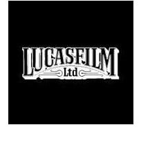
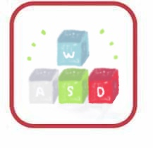
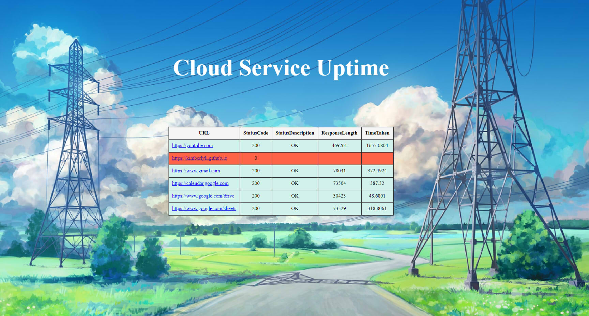

Kimberly Li
My name is Kimberly Li, and I am a Software Engineer, Systems and Network Specialist, Mathematician, and Artist based in San Francisco. I am currently studying Mathematics and Computer Science at University of California, San Diego.
In the summer of 2017, I worked as an IT Operations Intern at Lucasfilm, where I gained valuable skills in network reliability and engineering. In addition to designing tools to support artists, engineers, and production staff, I led the development of several projects including a dashboard that monitored uptime for Lucasfilm’s cloud services.
Just this fall, I was a Systems Infrastructure Intern at Pixar Animation Studios, where I engineered systems to monitor the health of highly dynamic and strained servers. At Pixar, I wrote scripts to streamline system workflows while also monitoring network traffic to understand the root cause of peak loads in the data center.
This coming summer, I am extremely excited to be working at Blizzard Entertainment as a Software Engineer in Reliability!
I am also currently a tutor/TA at the Computer Science and Engineering Department at UCSD, where I teach Computer Architecture and Digital Techniques, as well as introductory levels of C, HTML, CSS, JavaScript, and Python.
View my RESUME
Experience
Software Engineer - Reliability |
|
Blizzard Entertainment |
I am extremely excited to work as a reliability engineer intern at Blizzard,
where I will be working to develop tools and solutions to keep the servers running on the Overwatch team!
Infrastructure Resources Intern |
|
Pixar Animation Studio |
At Pixar, my primary responsibility has been to manage, automate, and administer high-profile production servers.
Because Pixar's high-throughput traffic is constantly passing through shared databases, I helped to develop a network dashboard application to manage all the nodes using Python and Django to analyze the growth and scale the nodes appropriately.
|  | IT Operations Intern |
|---|---|
Lucasfilm, Industrial Light & Magic |
I gained experience as a systems engineer and wrote scripts to automate tasks, and implemented a more efficient Asset Management tool. Moreover, I collaborated with my team to troubleshoot and provide client support for artists, engineers and production staff. I also worked in the data center, where I performed operational tasks such as refreshes, system upgrates, and network wiring.
Computer Science and Engineering Tutor/TA |
|
University of California,San Diego CSE Department |
I teach a variety of courses such as Computer Architecture, Digital Techniques (Verilog), Fluency in Information Technology (HTML, CSS, Python), and Intro to Programming (C). As a tutor/TA, I lead labs and discussion sections, hold office hours, and help students to better understand course material. I also develop and grade exams, homeworks, and course material.
Education and Skills
University of California, San Diego |
|
Bachelor of Science -- Mathematics and Computer Science (GPA: 3.7) |
LANGUAGES: Java, C, C++, Python, HTML, CSS, JavaScript, BASH, PowerShell, Verilog, R, SPARC Assembly, MATLAB
OTHER SKILLS & DESIGN TOOLS: Linux, Git, Logging, Scripting, Adobe Photoshop, Microsoft Suite, Eclipse IDE, DrJava, Vim, Notepad+, PyCharm, RStudio
Projects
OneWalk |
|
Java - Software Development Lead |
Using Java, XML, and FireBase, I worked with my team to create an Android Application for a gamified pedometer. The vision of OneWalk is to create a more fun and motivational fitness app to promote a healthier lifestyle.
View Source Code on GitHub or view the README for additional info
|  | Keyboard Chatter Correction Script |
|---|---|
Python |
Key listener application that corrects faulty mechanical keyboards using keyboard hook. Specifically, this script corrects an issue called chattering, which is when a single input produces a repeated output. This script calculates timing between the keyboard inputs and corrects the false double presses by supressing incorrect output.

| Cloud Uptime Dashboard |
|---|---|
PowerShell, HTML, CSS |

Uptime Dashboard that monitors cloud services by sending queries and recording server status. A table is generated with the query results, and if a server is down, users specified on email list will be notified through email.